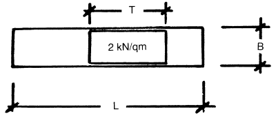

Berechnung von hochziehbaren Personenaufnahmemitteln mit fest angebauten Winden oder mit Winden in der Aufhängung
Die Nutzlast Q ergibt sich aus der durch 1,5 geteilten zulässigen Belastung F der Winden, vermindert um das Eigengewicht E des Personenaufnahmemittels.
n = Anzahl der Winden
F = zulässige Belastung einer Winde beim Heben und Senken von Lasten;
siehe DGUV Vorschrift 54 "Winden, Hub und Zuggeräte" (BGV/GUV-V D 8)
E = Eigengewicht des Personenaufnahmemittels
(z. B.: Q = 2 x 7,5 : 1,5 – 4,0 = 6,0 kN)

"Grundriss des Personenaufnahmemittels
Die entsprechend Abschnitt 1.1 berechnete Nutzlast Q des Personenaufnahmemittels wird über dessen Breite B und über die Teillänge T so verteilt, dass sich auf der Fläche B x T eine gleichmäßige Flächenlast von 2,0 kN/qm befindet.
(z. B.: T = 6,0 : 0,75 : 2,0 = 4,0 m)
Dementsprechend ergibt sich auf der Teillänge T die Streckenlast
S = B x 2,0 (m x kN/qm = kN/m)
(z. B.: S = 0,75 x 2,0 = 1,5 kN/m)
Für die Benutzer des Personenaufnahmemittels wird 1,0 kN pro Person angesetzt; die Anzahl der Personen, die sich gleichzeitig auf dem Personenaufnahmemittel befinden dürfen, wird errechnet, indem man die Nutzlast Q des Personenaufnahmemittels (in kN gemessen) durch 1,0 (kN/Person) teilt.
Auch bei ungünstigster Anordnung der Nutzlast (2,0 kN/qm auf der Teillänge T) darf in den Tragmitteln die zulässige Belastung F der Winden nicht überschritten werden; gegebenenfalls ist die Nutzlast durch Verkürzen der Teillänge T herabzusetzen.
Als Seitenkräfte sind anzusetzen
Die Seitenkräfte wirken als Punktlasten waagerecht auf den Geländerholm der Umwehrung; der Abstand der Punktlasten untereinander darf 0,5 m nicht überschreiten.
Für Arbeitskörbe und Arbeitsbühnen mit einer Höhe des Seitenschutzes bis 1,20 m ist auf ganzer Länge des Personenaufnahmemittels eine Last von 0,1 kN/m in Belaghöhe angreifend anzunehmen. Bei Seitenschutzhöhen über 1,2 m ist die tatsächlich getroffene Fläche mit einer Windlast von 0,1 kN/qm zu belegen. Für Ausleger in Ruhestellung ist der Lastfall "Abtreiben durch Wind" mit den Windlasten gemäß DIN EN 1991 nachzuweisen.
ist die höchste Zugkraft, die von der Winde auf das Tragmittel ausgeübt werden kann; sie ist z.B. abhängig von der Auslegung des Antriebsmotors und von der Art des Antriebssystems. Bei Elektromotoren entsteht die Höchstzugkraft beim Erreichen des Kippmomentes.
Wird die Zugkraft einer Winde durch einen Zugkraftbegrenzer zwangläufig begrenzt, ist sie die Höchstzugkraft.
Siehe Abschnitt 4.2.12 dieser Regel.
Bei der Bemessung des hochziehbaren Personenaufnahmemittels einschließlich seiner Aufhängung sind im Lastfall "Betrieb" die Wirkungen bewegter Massen mit dem Hublastbeiwert z 1,3 zu vervielfachen (gilt für Eigengewicht und Nutzlast).